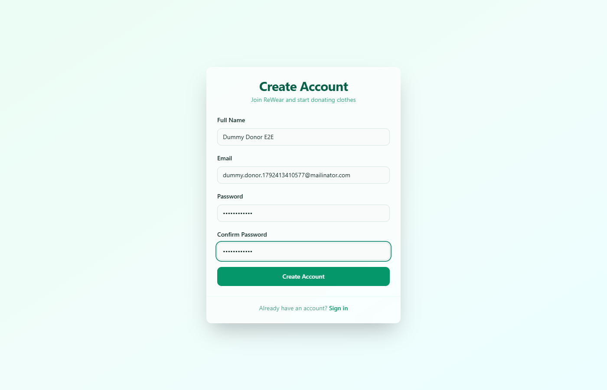
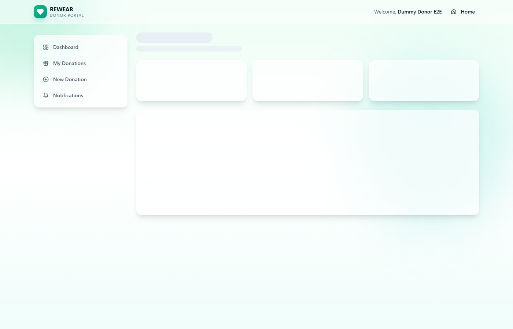
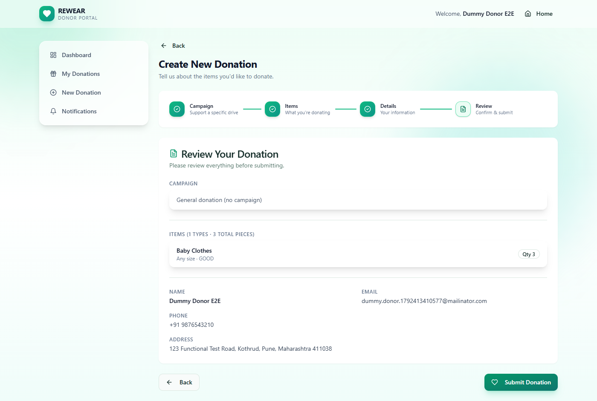
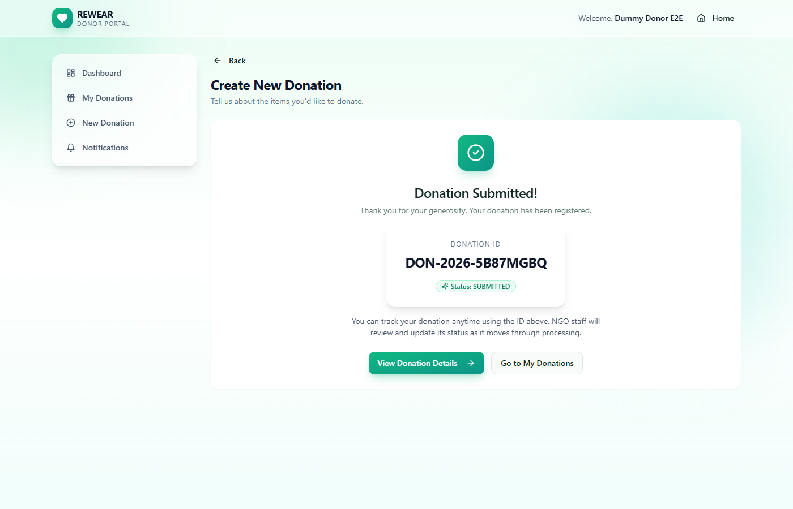
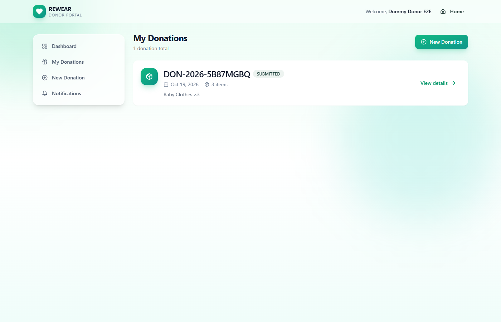
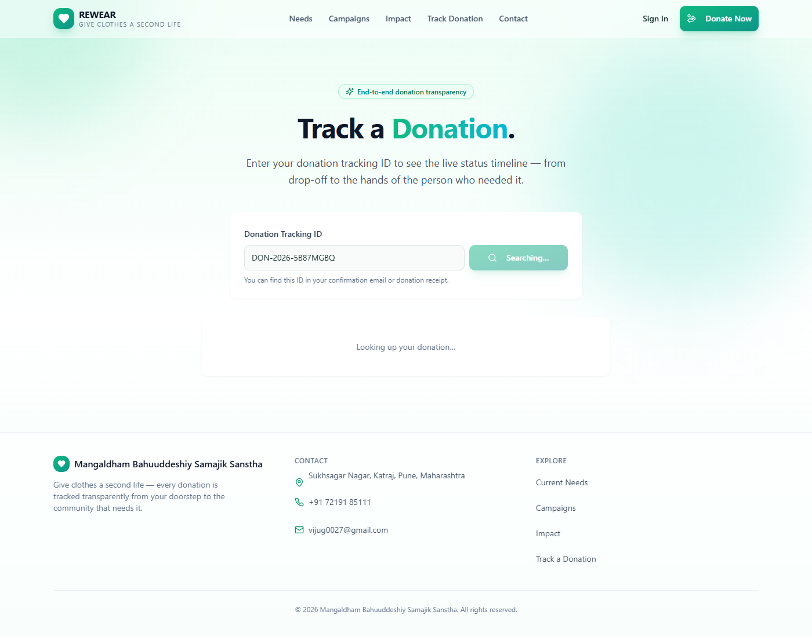

End-to-end verification of the deployed application using a disposable donor account and a live donation request.
?id= and ?don=), PII masking, and the emailed
manager-approval link. One confirmed defect was found (donors have no way to sign out),
plus one cosmetic observation.
?id=) was
re-tested and passed twice out of two attempts — it was a cold-start timing
flake in the harness, not an application bug. It is listed below as Pass (after retest).
| Status | Item | Change |
|---|---|---|
| FIXED | Donors had no sign-out control | Added a Sign Out button to the donor header in
app/donor/layout.tsx, calling the same signOut({ redirectTo: "/login" })
server action the admin panel uses. Verified: button renders at mobile and desktop widths,
the touch target is 44 px tall on mobile, clicking it redirects to /login, and
the session is genuinely cleared (/donor/dashboard then bounces to
/login?callbackUrl=…). A label hidden with hidden sm:inline left the
button with no accessible name on mobile — corrected to sr-only sm:not-sr-only so screen
readers announce “Sign Out” at every breakpoint. |
| DONE | Disposable test data left in the database | Removed 6 test donations and 4 dummy donor accounts
(dummy.donor.*@mailinator.com), plus 36 expired rate-limit rows. Verified afterwards:
0 test donations and 0 test accounts remain. Approval tokens, donation items and status history
were removed by cascade. |
| PENDING | Ship the sign-out control | The auto-submit guard is already committed and pushed to origin/main
as 52a4e4d. The new sign-out control in app/donor/layout.tsx is still an
uncommitted working-tree change and needs to be committed and pushed. |
Post-fix checks: npx tsc --noEmit clean · npm run build compiled successfully ·
npx vitest run 70/70 passing.
The donor portal renders a persistent header, but the only actions in it are the REWEAR logo and a Home link. There is no way for a signed-in donor to end their session. Searching the whole application for a sign-out affordance returns exactly one implementation, and it lives in the admin shell:
app/admin/layout.tsx — has a working signOut({ redirectTo: "/login" }) server action.app/donor/layout.tsx — nav items are Dashboard / My Donations / New Donation / Notifications, plus a Home link. No sign-out.components/ — no sign-out component exists.Impact: a donor on a shared or public device cannot log out; the session stays active until the cookie expires. This is also a privacy/accessibility gap for a platform that stores donor name, email, phone and pickup address.
Fix applied (see remediation log above): mirrored the admin pattern — a sign-out
button in the donor header of app/donor/layout.tsx calling the same signOut()
server action with redirectTo: "/login".
An initial attempt to fingerprint the deployment by probing for the locally-produced route chunk
page-7331ef74aa9d375b.js returned 404, which looked like evidence the live bundle
predated the local fix. That conclusion is not reliable — Next.js chunk filenames are
not reproducible between a local build and a Vercel build. Proof: a shared runtime chunk that exists
under the same name in both places has different contents (3,843 bytes locally vs 4,304 bytes
on Vercel, different SHA-256).
What is solid: the live site already passes the wizard Review-step check, so the auto-submit
behaviour is correct in production regardless. To confirm the deployed commit, check the Vercel
dashboard — the deployment triggered by commit 52a4e4d (“bug fixed-7”) is the one that
carries the wizard guard.
The first /track?id=… navigation was given 2.5 s, which the cold server action
exceeded. Re-running the identical URL twice, polling up to 15 s, found the donation both times
(FOUND / FOUND), as did the ?don= variant. No application change is
needed; treat this as a test-harness artefact.
| Status | Check | Evidence |
|---|---|---|
| PASS | Home page loads | HTTP 200 |
| PASS | Content-Security-Policy | default-src 'self'; script-src 'self' 'unsafe-inline'; style-src 'self' 'unsafe-inline'; … |
| PASS | X-Frame-Options | DENY |
| PASS | X-Content-Type-Options | nosniff |
| PASS | Referrer-Policy | strict-origin-when-cross-origin |
| PASS | Strict-Transport-Security | max-age=63072000; includeSubDomains; preload |
| PASS | Home renders in browser | title = “REWEAR — Give clothes a second life.” |
| PASS | No localhost leak in page markup | — |
| PASS | /campaigns loads | HTTP 200 |
| PASS | /impact loads | HTTP 200 |
| PASS | /requirements loads | HTTP 200 |
| PASS | /robots.txt served | Disallows /admin/, /donor/, /api/, /donations/approval, /notifications |
| PASS | /sitemap.xml served | 5 URL entries |
| Status | Check | Evidence |
|---|---|---|
| PASS | /track with no query params | Renders search form, no crash |
| PASS | Unknown donation ID handled gracefully | “No donation found” state, no 500 |
| Status | Check | Evidence |
|---|---|---|
| PASS | /admin/dashboard blocked for guests | redirected → /login |
| PASS | /donor/dashboard blocked for guests | redirected → /login |
| Status | Check | Evidence |
|---|---|---|
| PASS | Register a new donor account | dummy.donor.1792413410577@mailinator.com → landed on /donor/dashboard |
| PASS | Duplicate email rejected | Blocked with an error message; no session created |
| Status | Check | Evidence |
|---|---|---|
| PASS | Sign in with valid credentials | Landed on /donor/dashboard |
| PASS | Wrong password rejected | Stayed on /login with an error message (no user enumeration leak) |
| WARN | Sign out | No sign-out control exists anywhere in the donor portal — see Findings |
| Status | Check | Evidence |
|---|---|---|
| PASS | Step 1 — Campaign renders | “Continue” available |
| PASS | Step 2 — Items selectable | Category chosen from dropdown, quantity set to 3 |
| PASS | Step 3 — Details renders | Name pre-filled from the account |
| PASS | Step 4 — Review reached (no premature auto-submit) | After clicking Continue on Details the buttons were ["Back","Submit Donation"] — no submission occurred |
| PASS | Explicit “Submit Donation” succeeds | Success screen rendered |
| PASS | Donation ID issued | DON-2026-5B87MGBQ |
| Status | Check | Evidence |
|---|---|---|
| PASS | Donation appears in “My Donations” | Listed DON-2026-5B87MGBQ |
| PASS | Tracking via ?id= | Passed after retest — FOUND on 2/2 attempts (initial miss was a timing flake) |
| PASS | Tracking via ?don= | FOUND on 2/2 attempts |
| PASS | PII masked on the public tracking page | No donor email, phone or pickup address exposed on either variant |
| Status | Check | Evidence |
|---|---|---|
| PASS | Approval page with no token | Graceful “this link can’t be used” state, no crash |
| PASS | Approval page rejects an invalid token | ?token=invalidtokenvalue&action=approve → invalid-link state |
| PASS | Single-use approval token persisted | Verified directly in the database — see evidence below |
| Status | Check | Evidence |
|---|---|---|
| PASS | No uncaught console errors | No React errors, no hydration warnings, no failed network calls during the full journey |
Database record for the donation created during this run (read directly from Supabase):
{
"donationId": "DON-2026-5B87MGBQ",
"status": "SUBMITTED",
"items": 1,
"totalQty": 3,
"donorEmail": "dummy.donor.1792413410577@mailinator.com",
"createdAt": "2026-10-19T12:37:52.948Z",
"approvalTokens": [
{ "used": false, "usedAt": null, "expiresAt": "2026-10-26T12:37:56.775Z" }
],
"statusHistory": [ { "status": "SUBMITTED", "at": "2026-10-19T12:37:52.948Z" } ]
}
The un-used token with a 7-day expiry confirms the manager notification email was dispatched and
the approve/reject links are live. The action column is intentionally null
until the link is used — it is written at the moment of the decision.
Build-parity probe — inconclusive, kept for transparency:
LOCAL_BUILD_ID = D3H35qwTjWwcKSSIwrNdQ GET /_next/static/chunks/app/donor/donations/new/page-7331ef74aa9d375b.js -> 404 GET /_next/static/chunks/webpack-122ac2ee589c1c08.js -> 200 BUT the 200 file is NOT byte-identical to the local file of the same name: local 3,843 bytes sha256 EC96D4DB16DD52F2916DBA6B31F140A27F53812C2158BFEA4E458664CBB1017F deployed 4,304 bytes sha256 B3DA79A7C01DC62D1F1D2B4D8C91679C72192FB4AF912655FB45499D6AC07470 => chunk names are not reproducible across build environments, so the 404 above does NOT prove the deployed bundle is stale.






?id=)| Parameter | |
|---|---|
| Target | https://rewear-rust.vercel.app (Vercel production alias) |
| Runner | Node.js + Playwright (headless Chromium 131), 1400×900 viewport |
| Started | 2026-10-19T12:36:50Z (UTC) · 18:06 IST |
| Finished | 2026-10-19T12:38:13Z (UTC) · 18:08 IST · 83.4 s elapsed |
| Test account | dummy.donor.1792413410577@mailinator.com (disposable — removed after the run) |
| Donation created | DON-2026-5B87MGBQ — 1 item, qty 3, status SUBMITTED (removed after the run) |
| Manager notified | tanishqgames203@gmail.com — approval email pending action |
52a4e4d); the sign-out change to app/donor/layout.tsx still needs to be committed and pushed.tanishqgames203@gmail.com and that its links resolve to the production domain (not localhost).hidden sm:inline label pattern, so it also has no accessible name on mobile — the identical sr-only sm:not-sr-only treatment would fix it.